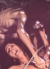
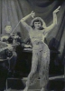
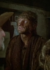

Tags:DramaHorrorThriller
Also known as:Immagini di un convento (original title)
Country:Italy,
Spoken languages:Italian
Genres:Drama, Horror, Thriller
Director(s):Joe D'Amato
Writer(s):Joe D'Amato, Denis Diderot
Video Codec:Unknown
Number: 3105


Certification:
Storyline:
Gripped by sexual desire, nuns pleasure themselves and each other in fear of the Mother Superior. One night, a wounded man is found on the grounds, and becomes connected to a mysterious pagan statue on the premises.
Cast:   

Medium: Bluray,
Comments: Part of: Nasty Habits - The Nunsploitation Collection
Loaned: No
Aspect ratio: Unknown